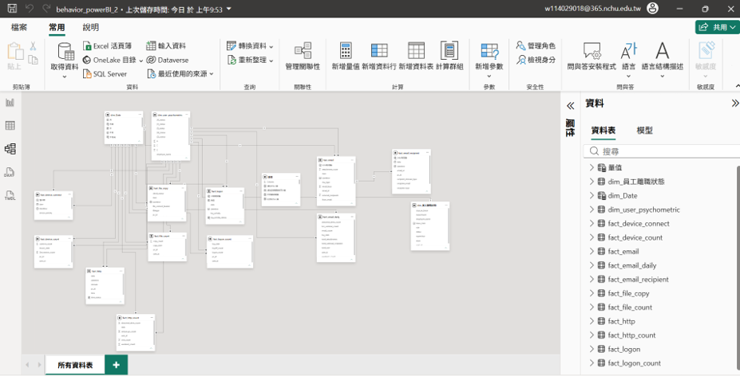
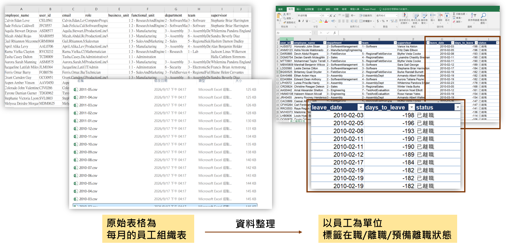

背景文獻：為什麼要看「行為」？又為什麼不能只看行為？
兩篇文獻串起本專案的出發點：先用行為找出異常，再補上「人」的因素做事前預防。
以使用者行為為基礎的內部威脅偵測（UBITD）
內部人員擁有合法權限，傳統特徵碼資安設備認不出「合法權限下的惡意操作」。UBITD 先建立員工正常行為的基準線（baseline），持續監控存取模式、系統操作與網路瀏覽習慣，即時捕捉偏差行為與潛在的內部惡意操作。在 CERT 等資料集上，結合 LSTM、SVM 等模型，召回率（Recall）可達 90%～99%。
UBITD 監控 8 大類日誌，藍底為本專案涵蓋的 6 類
Kamatchi, K. & Uma, E. (2025). Insights into user behavioral-based insider threat detection: systematic review. International Journal of Information Security, 24:88. DOI
人類脆弱性評估（HVA）
僅依賴行為偵測有其局限與挑戰：
- 屬於「風險顯現時」偵測，而非「事前預防」
- 無法洞察根本原因
因此要達到真正的「事前預防」，不能只靠事後的行為異常監控，還需結合員工的心理特徵、認知狀態與情境脈絡，進行全面的人類脆弱性評估（Human Vulnerability Assessment, HVA）。
Papatsaroucha, D., Psaroudaki, S., Vassilaki, E., et al. (2026). Human Vulnerability Assessment in Cybersecurity: A Systematic Literature Review of Methods, Models, and Instruments. arXiv:2605.22119. PDF
資料集介紹
CERT Insider Threat r4.2 是 CMU CERT 製作的合成資料。真實企業員工 log 過於敏感無法公開，因此以模擬方式產生。Kaggle 資料集
資料內容與紀錄時間點
5 類行為 log 每一筆都記錄到「秒」，並標註是哪位員工、在哪台電腦上的操作。
| 檔案 | 紀錄時間點 | 每筆紀錄內容 |
|---|---|---|
| logon.csv | 每次登入／登出（精確到秒） | 員工 ID、電腦 ID、動作（Logon / Logoff） |
| device.csv | 每次插拔 USB（精確到秒） | 員工 ID、電腦 ID、動作（Connect / Disconnect） |
| http.csv | 每次瀏覽網頁（精確到秒） | 員工 ID、電腦 ID、網址、網頁內容關鍵字 |
| email.csv | 每封寄出的信（精確到秒） | 寄件人、收件人（to / cc / bcc）、信件大小、附件數 |
| file.csv | 每次複製檔案到 USB（精確到秒） | 員工 ID、電腦 ID、檔名、檔頭（file_header） |
| psychometric.csv | 每人一筆（不隨時間變動） | OCEAN 五大人格分數 |
| LDAP/ | 每月一份名冊（2009/12 – 2011/05） | 職稱、部門、團隊、主管；員工從名冊消失即代表離職 |
| answers/ | 每件事件的起訖時間 | 惡意員工 ID、情境編號（1～3）、事件逐筆明細 |
3 種惡意情境
- 情境 1｜外洩資料：原本不加班、不用 USB 的員工，開始下班後登入、使用 USB，並把資料上傳到 wikileaks.org，不久後離職
- 情境 2｜跳槽前竊取資料：開始瀏覽求職網站、向競爭對手求職，離職前用 USB 大量帶走資料
- 情境 3｜蓄意破壞：心生不滿的系統管理員在主管電腦裝側錄程式，盜用主管帳號發送恐慌郵件後離職
OCEAN 五大人格量表
每項 10 題 × 1～5 分，分數範圍 10～50；分數越高傾向越強（如 N 高代表情緒較不穩定）。
我們想用這份資料集做到兩件事
日常行為偵測：以登入、USB、上網、Email、檔案複製等行為 log，建立員工基準線並偵測偏離（第一部分儀表板）。
事前預防機制：加入機器學習模型，結合行為與人格特徵預測高風險員工（第二部分）。
模擬資料集中包含 OCEAN 五大人格量表（psychometric.csv），可作為「人類脆弱性」的心理特徵一併納入模型訓練。
專案架構
第一部分做「看得見異常」的儀表板，第二部分用機器學習做「預測誰有風險」，最後把預測結果回寫到主儀表板。
第一部分：員工異常行為儀表板已完成
- 目的：多行為維度建構異常分析儀表板，及早預防異常資安事件
- 資料清理：SQL Server ETL，產出 7 大事實與維度表、員工離職狀態表
- 資料建模：Power BI 星狀模型與量值、儀表板設計
- 版本備份：GitHub 多分支
第二部分：CERT 監督式機器學習規劃中
- 目的：透過機器學習每日偵測高風險員工
- 資料清理：Python 彙整 ML 行為標籤表（寬表）
- 資料建模：主儀表板加入 Top10 高風險員工預測值
- 版本備份：GitHub
第一部分：企業內員工異常行為儀表板
把原始 log 清理成星狀模型，再用 Power BI 建構「由大到小」三層鑽研的異常分析儀表板。
資料處理流程
CERT 原始 CSV
5 類行為 log、心理測驗、每月 LDAP 名冊
匯入 SQL Server
資料量龐大，先取 2010/7/20～8/20 作為展示區間
建立 View 表
整理成事實表、維度表與各行為彙總表
離職狀態處理
比對每月 LDAP 名冊，員工從名冊消失即推算為預計離職
Power BI 建模
建立星狀模型與 DAX 量值，作為儀表板的資料基礎



儀表板建置流程
從全公司一路縮小到單一員工的單一行為，每一層都在回答不同的問題。
全體員工
- 當日 Top10 高風險員工與總異常數
- 異常員工的分佈部門
- 全員登入趨勢散佈圖，找出離群值
- 異常檔案複製列表
單一員工
- 時間區間內各行為異常數量
- 在職／預計離職狀態
- 判斷該往哪個行為深入看
單一員工 × 單一行為 × 與過去平均值比較
操作展示
各維度畫面
主儀表板｜全體員工維度
每天打開的第一頁，快速掌握全公司狀況，再點選可疑員工往下鑽研。
主儀表板目前為暫定版，待第二部分完成後替換為 ML 預測結果
看什麼
- 當日 Top10 高風險員工與總異常數
- 今日異常員工的分佈部門與各行為異常數字
- 全員登入趨勢散佈圖找出離群值
- 異常檔案複製列表
員工總覽頁｜單一員工維度
由主儀表板點選員工鑽研進入，一頁看完這位員工的整體風險輪廓。
看什麼
- 時間區間內各行為異常數量
- 在職／預計離職狀態（比對每月 LDAP 名冊推算）
Logon / Logoff｜登入登出
找出非工作時間登入、異常時段存取等跡象。
看什麼
- 時間區間內登入登出明細
- 登入時間分布
- 與過去平均值比較，確認是否偏離平日行為
HTTP Domain｜上網網域
觀察是否突然造訪大量陌生網域，或上網時段異常。
看什麼
- 時間區間內上網網域明細
- 上網時間與次數分布
- 不重複網域數 vs 平均值
Email｜電子郵件
留意寄往外部的信件與附件量是否異常增加。
看什麼
- 時間區間內寄信明細
- 一日內寄信時間趨勢
- 外部收件人佔比、單信平均附件大小 vs 過去平均
File Copy｜檔案複製
偵測大量複製與檔案偽裝，是資料外洩的關鍵訊號。
看什麼
- 時間區間內異常複製明細
- 比對 file_header 與實際檔名，不符者視為疑似竄改
- 異常複製數 vs 過去平均
第二部分：CERT 資料集監督式機器學習內容產出中
每日偵測員工行為維度，預測高風險員工，並把結果回寫主儀表板。完成後會陸續更新。
資料清理
Python 彙整 ML 行為標籤表（寬表）
待補模型訓練
模型選擇與訓練
待補模型評估
評估指標（Recall 等）
待補接回儀表板
Top10 高風險員工回寫 Power BI 主儀表板
待補更新展示頁
更新網頁與展示影片
待補進度 0 / 5
未來應用
同一套「行為 log → 異常偵測 → 預警」的邏輯，可以延伸到更多場景。
跨產業複用
「從大維度到小維度」的儀表板邏輯，可套用到製造業異常檢測、流程異常分析，加速每日排查。
提早預警
以歷史資料建模，讓系統與工程師提早鎖定高風險族群，提早排除。
AI 時代的新資料源
企業導入內部 AI 後，AI 查詢 log 也能套用同一套系統——「誰在異常時段對 AI 工具大量查詢／貼上」，與 CERT 裡「誰在異常時段大量存取檔案」是同一類問題。